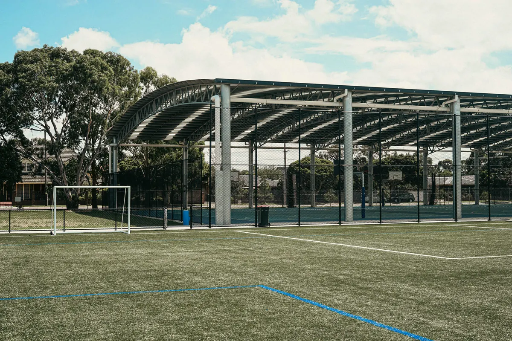
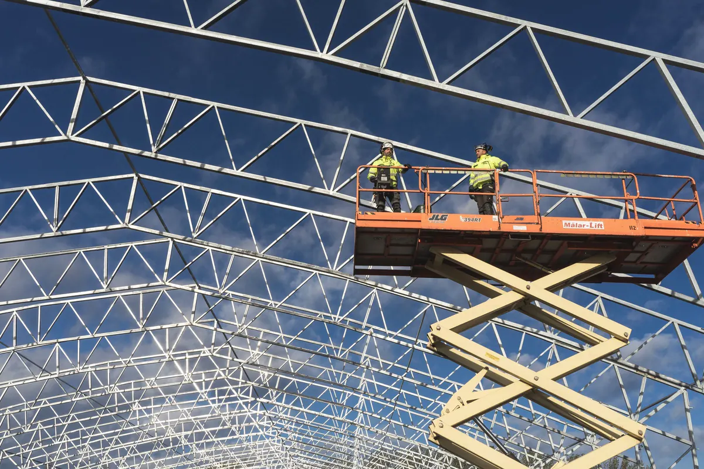

Cobrir a quadra é projeto de estrutura, não compra de telha
Esta página trata só da cobertura metálica da quadra: o sistema estrutural, a telha, as calhas, a fundação dos pilares e a montagem. A obra da quadra em si — piso esportivo, base, drenagem de piso, alambrado e demarcação — está em construção de galpões e quadras. O panorama do que fazemos em aço, do projeto ao fornecimento de material, fica na página de estruturas metálicas em Vitória ES.
Quem nos procura costuma estar em uma de duas situações: tem uma quadra descoberta que fica inutilizada no sol do meio-dia e em toda chuva, ou vai construir uma quadra nova e quer que ela já nasça coberta. Atendemos condomínios, escolas, clubes, prefeituras e empresas em Vitória, Vila Velha, Serra, Cariacica e região, fazendo tudo do zero: projeto, fornecimento do aço, fabricação, montagem e ART.
A cobertura de quadra tem uma particularidade que engana: é leve e tem vão grande. Por isso o esforço que manda no projeto quase nunca é o peso — é o vento, que tende a levantar a cobertura. Telha que voa em temporal e pilar arrancado da base são falhas de projeto, não azar.

Tipos de cobertura: arco treliçado, duas águas e shed
Arco treliçado
É a solução mais comum para quadra poliesportiva. As treliças em arco vencem o vão inteiro apoiadas só nas laterais, trabalham bem com o peso próprio e dão altura justamente no centro da quadra, onde a bola sobe no vôlei e no lançamento do basquete. A curvatura escoa a água para as laterais e simplifica a calha. O ponto de atenção é o empuxo horizontal nos apoios: o arco tende a abrir, e isso precisa ser resolvido no pilar, na fundação ou com tirante.
Duas águas (tesoura ou pórtico)
Cobertura com cumeeira no centro e duas quedas, sobre tesouras treliçadas ou pórticos de alma cheia. É mais simples de fabricar e de fechar lateralmente, aceita bem calha e rufo e conversa melhor com a arquitetura quando a quadra fica ao lado de um prédio de telhado convencional. Em vão grande, a tesoura precisa de altura própria, e isso entra na conta da altura livre.
Shed e uma água
O shed, com faces inclinadas em dente de serra, permite abrir faixas de iluminação e ventilação natural em uma só orientação, evitando sol direto na quadra. A cobertura em uma água resolve quadras menores ou encostadas em muro e divisa, jogando toda a água para um lado. As duas exigem mais cuidado com calha, porque concentram a água em menos pontos.
A escolha entre elas sai do projeto estrutural, comparando consumo de aço, esforço na fundação, drenagem e interferência com o entorno — não de catálogo.
Altura livre e vão sem pilar no meio da quadra
Dois critérios definem a geometria antes de qualquer cálculo. O primeiro é a altura livre: a distância entre o piso e o ponto mais baixo da estrutura sobre a área de jogo. Ela depende das modalidades que a quadra vai receber — o vôlei e o basquete exigem mais que o futsal — e do nível de competição pretendido. Para quadra de campeonato, a referência é o regulamento da federação da modalidade; para quadra de lazer de condomínio, costuma-se adotar o mesmo critério para não limitar o uso no futuro. Na cobertura em arco, a altura livre é medida no ponto mais baixo do arco sobre a faixa de jogo, não só no centro.
O segundo é o vão livre: nenhum pilar dentro da quadra nem da faixa de segurança ao redor dela. Pilar no meio do jogo é risco de colisão e inutiliza a quadra para esporte sério. Com os apoios fora dessa área, o vão da estrutura passa a ser a largura da quadra somada às faixas laterais e ao espaço até o pilar — e é isso que define o porte das treliças.
Também entram na geometria o beiral, que protege as laterais da chuva inclinada, e a posição dos refletores, que precisam ficar acima da altura livre e fora do eixo das tabelas.
Telha, luz natural, ruído de chuva e fechamento lateral
| Telha | Vantagem | Ponto de atenção |
|---|---|---|
| Metálica simples (trapezoidal ou ondulada) | Menor custo e menor peso | Ruído alto em chuva forte e calor irradiado para a quadra |
| Termoacústica (sanduíche com núcleo isolante) | Reduz ruído de chuva e calor sob a cobertura | Mais pesada; exige fixação e sobreposição corretas |
| Policarbonato (alveolar ou compacto) | Luz natural, dispensa refletor durante o dia | Aquece e ofusca se usado em excesso; ruidoso em chuva |
| Metálica com faixas de policarbonato | Equilíbrio entre luz, ruído e temperatura | Faixas posicionadas para não criar ofuscamento no eixo do jogo |
Em escola e condomínio, onde a quadra recebe aula, festa e reunião, o ruído de chuva pesa mais do que parece: telha simples em temporal impede qualquer conversa embaixo. A telha termoacústica resolve boa parte do problema. A iluminação natural por policarbonato funciona melhor em faixas longitudinais, fora do eixo em que o jogador olha para cima.
No fechamento lateral, as opções vão de tela ou alambrado (que retém a bola e deixa o vento passar) a fechamento parcial com telha no topo das laterais, para barrar a chuva inclinada. Fechar demais transforma a cobertura em galpão: muda o cálculo de vento, reduz a ventilação e pode alterar exigências de segurança contra incêndio — quando a quadra vira ambiente fechado, isso passa a conversar com a instalação de incêndio e SPDA. Aliás, uma cobertura metálica de grande área deve ter a necessidade de SPDA avaliada no projeto.
Vento, calhas e drenagem da cobertura
O cálculo de vento segue a ABNT NBR 6123, considerando a região, a rugosidade do terreno, a altura e a forma da cobertura. Em cobertura aberta nas laterais, o vento entra por baixo e soma pressão interna à sucção externa — é a combinação que arranca telha e levanta estrutura. Na Grande Vitória, com a orla e os morros acelerando o vento em vários bairros, essa verificação não é formalidade. Dela saem o espaçamento das terças, o tipo e a quantidade de fixadores da telha, o contraventamento e a fundação dimensionada para tração, não só para compressão.
A água da cobertura precisa ter destino. Uma cobertura de quadra recebe muita água em pouco tempo e a despeja nas laterais: sem calha e condutor dimensionados, ela cai na borda do piso esportivo, respinga para dentro e encharca a base. O projeto define calha, condutores, pontos de descida junto aos pilares e a ligação com a rede de drenagem existente — que muitas vezes precisa de ajuste para receber a vazão nova.
Perto do mar, a proteção contra corrosão é parte do dimensionamento: galvanização, esquema de pintura compatível com a agressividade do local e fixadores do mesmo padrão. Parafuso comum em cobertura galvanizada é o primeiro ponto a enferrujar — ver patologias e corrosão estrutural.

Cobrir quadra existente: fundação, aprovação e montagem
Fundação dos pilares sem destruir o piso
Em quadra pronta, os pilares vão para o entorno — calçada, grama, faixa atrás do alambrado — e a fundação é feita nesses pontos, com demolição localizada e recomposição do acabamento. O piso esportivo não é tocado. Antes de escavar, verificamos o que existe embaixo: tubulação, caixas de drenagem, eletroduto de iluminação e a base do próprio piso. Quando a quadra encosta em muro ou divisa, o projeto estuda pilar junto ao alambrado e fundação de menor área de escavação. Se houver sondagem ou projeto da quadra original, eles reduzem incerteza e custo.
Aprovação em condomínio, escola ou prefeitura
Em condomínio, a cobertura é obra em área comum e normalmente passa por assembleia, com o quórum previsto na convenção. A assembleia decide melhor com projeto na mão: planta, cortes, perspectiva, memorial da estrutura e das telhas e proposta com escopo fechado. Para o síndico, a cobertura entra depois no plano de manutenção predial do condomínio, com inspeção de fixação, calhas e pintura. Em escola e prefeitura, o processo costuma exigir memorial descritivo, planilha e ART para licitação ou aprovação interna. Dependendo do município e do porte, há também aprovação ou comunicação à prefeitura.
Fabricação, montagem e prazo
As treliças e os pilares são fabricados em oficina, com soldagem controlada e tratamento superficial, e chegam à obra prontos para parafusar — veja a fabricação de estruturas metálicas. A montagem é feita com plataforma elevatória ou guindaste, com plano de içamento e trabalho em altura conforme a NR-35 e a NR-18. O prazo depende do tamanho, do tipo de telha e do acesso de caminhão ao local, e é informado na proposta depois do projeto. Como a maior parte do trabalho acontece na fabricação, fora do condomínio ou da escola, a interferência no local se concentra na fundação e na montagem.
Laudo e ART
A cobertura sai com ART registrada no CREA-ES cobrindo projeto e execução. Para cobertura que já existe — com ferrugem, telha solta ou calha transbordando — fazemos vistoria e laudo técnico com ART indicando o que reparar, reforçar ou substituir. Se a área de lazer do condomínio também tem brinquedos, a mesma visita pode incluir o laudo de playground.
Perguntas frequentes sobre cobertura de quadra
Dá para cobrir uma quadra que já existe sem quebrar o piso?
Na maioria dos casos, sim. Os pilares ficam fora da área de jogo e da faixa de segurança, no entorno da quadra, onde normalmente há calçada, grama ou alambrado. A fundação é feita nesses pontos, com demolição localizada e recomposição do acabamento. Quando o espaço em volta é estreito ou a quadra encosta em muro e divisa, o projeto estuda pilar junto ao alambrado, fundação com menor área de escavação ou apoio em estrutura existente, sempre depois de verificar o que há embaixo: tubulação, drenagem e a própria base do piso.
Qual é melhor para quadra: cobertura em arco ou em duas águas?
Depende do vão, da altura disponível e do entorno. O arco treliçado vence vãos grandes sem pilar intermediário, com bom aproveitamento de aço, e dá altura no centro da quadra, onde a bola sobe mais. A duas águas com tesoura ou pórtico é mais simples de fabricar, facilita calha e fechamento lateral e costuma ser preferida quando a cobertura precisa conversar com a arquitetura de um prédio vizinho. A escolha sai do projeto, comparando consumo de aço, fundação e drenagem de cada alternativa.
A chuva faz muito barulho em cobertura metálica de quadra?
Telha metálica simples faz barulho relevante em chuva forte, o que atrapalha aula, treino e evento. A telha termoacústica, com núcleo isolante entre duas chapas, reduz bastante o ruído e também o calor irradiado para a quadra. Policarbonato transmite luz natural, mas também é ruidoso e aquece o ambiente se usado em excesso. Em escola e condomínio com uso intenso, o mais comum é telha termoacústica com faixas de policarbonato para iluminação natural.
Cobertura de quadra em condomínio precisa de aprovação em assembleia?
Em geral, sim. Cobertura de quadra é obra em área comum que altera a edificação e normalmente exige deliberação em assembleia, com o quórum previsto na convenção e no Código Civil para esse tipo de obra. Para a assembleia decidir bem, o condomínio precisa de projeto com planta, cortes e perspectiva, memorial da estrutura e das telhas e proposta com escopo fechado. Dependendo do município e do porte, também pode haver aprovação ou comunicação na prefeitura.
Vocês emitem laudo e ART da cobertura de quadra?
Sim. A cobertura é projetada, fabricada e montada com ART registrada no CREA-ES, cobrindo projeto e execução. Para cobertura já existente, fazemos vistoria e laudo técnico do estado da estrutura: corrosão, ligações, fixação de telhas, calhas e fundação, com indicação do que precisa ser reparado, reforçado ou substituído.
Cobertura de quadra na Grande Vitória
Projeto, fabricação e montagem para condomínios, escolas, clubes e empresas da região:
Vai cobrir a quadra do condomínio ou da escola?
Mande fotos, as medidas da quadra e do entorno. Retornamos com a solução estrutural e a proposta.